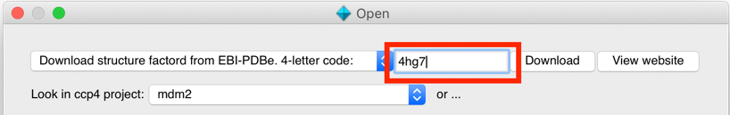

Programs¶
ACEDRG, PHASER, REFMAC, RDKIT, COOT
Scenario¶
(Accurately) informed that there is “a lot of rubbish” among the structure ligand complexes in the PDB, you decide to re-solve the structure of everyone’s favourite PPI drug target MDM2 in complex with the game-changing tool compound Nutlin 3A. There is a dodgy 1.6 Å structure (PDB: 4hg7) deposited by a disreputable group….so you plan to use their deposited reflections, but start from someone else’s model There is a nice MDM2 structure from another group (4qo4) that you choose for your startpoint. You plan to use modern tools to make a start model for Nutlin 3A. The other model is of a longer construct and you will only use residues 20-107 of Chain A.
Task 1: Get the data¶
Open CCP4i2 and make a new project called MDM2
“Utilities” -> “Copy demo data to project” -> “MDM2”
Click the “Task menu” button in CCP4i2.
Expand the Import merged data, AU contents, alignments or coordinates section.
Create a new Import merged reflection data task
You can import files (reflections or coordinates) from the PDB directly: in the file browser dialog (accessed by clicking ): a line at the top allows you to provide the accession code (4hg7). 
Click “Download” then once the file has downloaded “Open” and click “OK” on the file provenance pop-up.
Enter a name for “Crystal” and “Dataset”
Click “Run”
You’ll see a nice report about the quality of the data which should hopefully look familiar. The data from the original file are kept - the report is for analysis only.
{kind=link}
Task 2: Make your ligand – Make ligand task (LIDIA, ACEDRG, RDKIT)¶
{kind=link}
This takes a while to run so it’s best to do it next. Click the “Task menu” button in CCP4i2.
Expand the Ligands section.
Create a new Make Ligand – Acedrg job.
The fastest option is to change “Start with molecular structure from” in the “Start point” subsection to “a SMILES string: COc1ccc(c(OC(C)C)c1)C2=N[C@H]([C@H](N2C(=O)N3CCNC(=O)C3)c4ccc(Cl)cc4)c5ccc(Cl)cc5
Perhaps change “Three letter code for output monomer” to something more informative?
Click “Run”
{kind=link}
Task 3: Generate a starting model (Molecular replacement: PHASER)¶
Whilst waiting move on to molecular replacement. First we need to define the contents of the asymmetric unit. Click the “Task menu” button in the toolbar.
Expand the Import merged data, AU contents, alignments or coordinates section.
Create a new Define AU contents job.
Click “Browse for sequence file” and load “4hg7.seq” from the “mdm2” folder.
Click “Run”
Click the “Task menu” button in CCP4i2.
Expand the Molecular replacement section.
Create a new Basic Molecular Replacement – PHASER job.
The reflection data will be automatically filled in but we need to change “Composition of the asymmetric unit” in the “Composition” subsection to “Provided as full specification by sequence” which should select the output of the Define AU contents job automatically.
For the search model download the coordinates from the PDB directly: in the file browser dialog (accessed by clicking ): a line at the top allows you to provide the accession code (4qo4).
This is the structure of a longer construct so we need to select only residues 20-107.
Right click the icon left of “Search” in the “Search model” subsection and choose “Select atoms” Provide the selection string “A/20-107” (quotation marks should not be included).
Click “Run”
Does the report indicate molecular replacement has been successful? What is the LLG and TF Z-score?
Task 4: Refine the starting model to create difference density for the ligand (Refinement: REFMAC5)¶
Click the “REFMAC5” button at the bottom of the report
This will create a new Refinement – REFMAC5 job with the coordinates from the previous Molecular replacement job already selected.
Change “Number of refinement cycles” in the “Options” subsection to 20.
Click “Run”
Task 5: Generate a starting model (Manual model building: COOT, Refinement – REFMAC5)¶
After 20 cycles R/Rfree should be ~0.35/0.37. Click the “COOT” button at the bottom of the report.
This will create a new Manual model building - COOT job with all the inputs appropriately already selected.
Click “Run” and inspect the maps.
Find the ligand density HINT: “Validate” -> “Unmodelled blobs…”
Rebuild (or delete) the sidechains pointing into the ligand density HINT: Y67 and H73.
“File” -> “Save to CCP4i2” when you’re done.
Close Coot and click the “REFMAC5” button at the bottom of the report and run the Refinement – REFMAC5 task again – the job is automatically filled with the correct inputs.
Task 6: Introduce your ligand into the structure (Manual model building: COOT)¶
Click the “COOT” button at the bottom of the Refinement – REFMAC5 report.
All the correct inputs are automatically filled in but you need to select the dictionary for the ligand you made earlier as the “Geometry dictionary” in the “Additional data” subsection.
Click “Run”
Again find the large blob of difference electron density.
Summon coordinates for the ligand (Coot: “File” -> “Get monomer…” and provide the three letter code you gave to the drug).
Invite Coot to place the ligand into the electron density (“Ligand” -> “Find Ligands…”
Tick “Flexible?” and “DRG_from_dict” (or whatever you called the ligand).
Click “Find Ligands”
Merge the positioned ligand into your main coordinates (“Edit” -> “Merge Molecules…”
Write updated coordinates into your CCP4i2 session (“File” -> “Save to CCP4i2” or “CCP4i2 extensions” -> “Save to CCP4i2”
Run the Refinement – REFMAC5 task again and inspect the difference density for your newly fitted ligand.